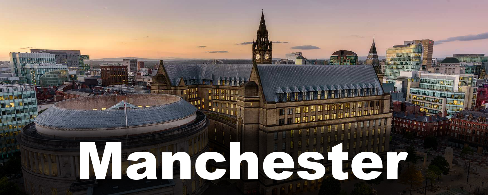

Londen

Londen is de hoofdstad en grootste stad van zowel Engeland als het Verenigd Koninkrijk. De stad is, behalve de hoofdstad en de grootste stad van het Verenigd Koninkrijk, ook het politieke, economische en culturele centrum van dat land. Ook in Europa en de wereld vervult ze een belangrijke functie op diverse gebieden: Londen wordt als een van de vier traditionele alfa-wereldsteden beschouwd, samen met Parijs, Tokio en New York. Vooral in de 18e en de 19e eeuw was Londen als hoofdstad van het Britse Rijk het absolute politieke en economische machtscentrum van de wereld. Londen telt vier plaatsen die op de Werelderfgoedlijst van de UNESCO staan: de Tower of London, de historische nederzetting van Greenwich, de Kew Gardens, en een gezamenlijke inschrijving bestaande uit het Palace of Westminster, Westminster Abbey en Saint Margaret's Church.
Edinburgh
Edinburgh is sinds 1437 de hoofdstad van Schotland. De stad ligt aan de oostkust, aan de zuidzijde van de Firth of Forth, en is de zetel van het Schots Parlement. De stad wordt door inwoners soms liefkozend Auld Reekie ("Oude Rokerd") genoemd. Edinburgh is bekend van het internationale Edinburgh Festival, een combinatie van diverse muziek- , opera-, dans- en theateruitvoeringen, dat in de zomer vele toeristen trekt. Op dit internationaal kunstfestival treden de beroemdste kunstenaars en ensembles van de wereld op. Een van de bekendste bezienswaardigheden van de stad is Edinburgh Castle, dat is gebouwd op een vulkanische rots
Manchester
Manchester is een grote stad en Engels district in het ceremoniële graafschap Greater Manchester. Manchester geldt in de hele wereld als het archetype van een textielstad, mede omdat Vlaamse wevers zich er vestigden. De stad was belangrijk bij de opkomst van de industriële revolutie waarbij de rivier de Irwell, het Manchester Ship Canal, het Rochdale Canal en het Bridgewater Canal een belangrijke rol speelden. Manchester is onder andere ook bekend vanwege de wereldberoemde voetbalclubs Manchester United en Manchester City FC.
Liverpool

Liverpool is een stad en district van het graafschap Merseyside in het noordwesten van Engeland, aan de noordzijde van de rivier de Mersey. Liverpool werd als een borough opgericht in 1207 en kreeg haar stadsrechten in 1880. In de 18e eeuw groeide de havenstad enorm dankzij de handel naar de Caraïben, Ierland en het vasteland van Europa. Tegen de negentiende eeuw passeerde ruim 40 procent van de wereldhandel de Liverpoolse haven. Tegenwoordig is de havenfunctie van de stad grotendeels vervallen en is de toeristensector gegroeid dankzij de exponenten van de Merseybeat, waaronder The Beatles en Gerry & the Pacemakers. Verder herbergt Liverpool twee van de voetbalclubs uit de Engelse Premier League, Everton FC en Liverpool FC en is het warenhuis Woolworths in Liverpool opgezet. Sinds 2004 staat de Maritieme handelsstad Liverpool op de Werelderfgoedlijst van de UNESCO, dat is het deel van Liverpool om het oude havengebied.
Oxford

Oxford is een universiteitsstad en district in Oxfordshire in het Verenigd Koninkrijk. In tegenstelling tot de grote rivaal, Cambridge, is Oxford een stad met veel industrie, in het bijzonder autoproductie in de voorstad Cowley. In de stad staat de universiteit van Oxford. Oxford wordt wel de "stad der dromerige spitsen" genoemd, een term die is gemunt door Matthew Arnold wegens de harmonische architectuur van de universiteitsgebouwen. De naam Oxford betekent een voorde ("ford"), een doorwaadbare plaats in een rivier waar boeren hun ossen ("oxen") konden laten oversteken. De Universiteit van Oxford is de oudste universiteit van Engeland; voor het eerst vermeld in de 12e eeuw. Wellicht de bekendste persoon uit Oxford is Stephen Hawking.
Birmingham

Birmingham is een stad en district in het Engelse graafschap West Midlands in het Verenigd Koninkrijk. Birmingham was het centrum van de Britse metaalindustrie en van de "Black Country", zo genoemd naar de rokende fabrieksschoorstenen die zich hier concentreerden ten tijde van de Industriële revolutie. Tegenwoordig is Birmingham een centrum voor de dienstverlenende sector, met futuristische hoogbouwkantoren. Hoe het gebied er vroeger uitzag is nog een beetje te zien in het Black Country Museum, dat een aantal authentieke huizen en ambachtelijke bedrijfjes toont. Birmingham wordt vaak Brum genoemd (afgeleid van de oude naam Brummagem), en de inwoners, die Engels met een karakteristiek dialect spreken, heten Brummies. Het is een van de meest multiculturele steden van het Verenigd Koninkrijk. In de stad vindt ook de op twee na grootste parade ter gelegenheid van St. Patrick's Day plaats, na die in Dublin en New York. De stad wordt jaarlijks door miljoenen toeristen bezocht, en biedt na West End in Londen de beste gelegenheid van het land om inkopen te doen.